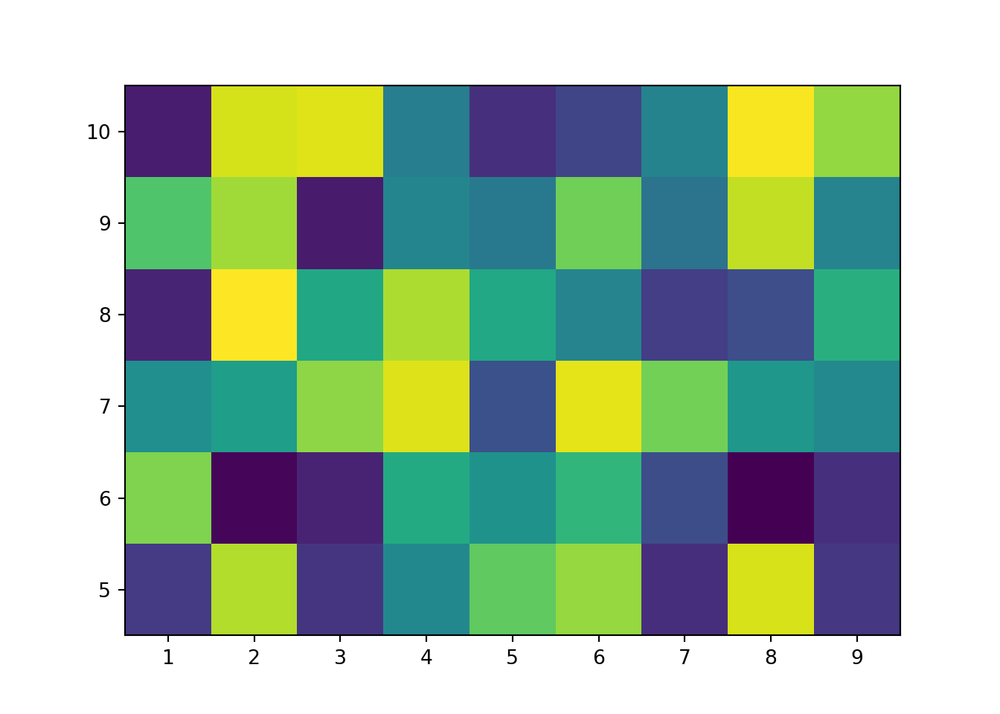

Figure 5.1: Standard curves for the LAMPS crop priming experiment
We can also throw some Python in here:
xs = [x for x inrange(10)]print(*(f'{x} squared is {x^2}.'for x in xs), sep='\n')
0 squared is 2.
1 squared is 3.
2 squared is 0.
3 squared is 1.
4 squared is 6.
5 squared is 7.
6 squared is 4.
7 squared is 5.
8 squared is 10.
9 squared is 11.
Code
import matplotlib.pyplot as pltimport numpy as npZ = np.random.rand(6, 10)x = [x +0.5for x in xs]y = np.arange(4.5, 11, 1) fig, ax = plt.subplots();ax.pcolormesh(x, y, Z)

Figure 5.2: A good ol’ heatmap.
Math stuff
We can also write math stuff! For example, here is a definition:
Definition 5.1 (Continuity) The function \(f: \mathbb{R}^n \to \mathbb{R}^m\) is continuous at a point\(x \in \mathbb{R}^n\) if for all \(\varepsilon > 0\) there exists \(\delta > 0\) such that if \(|x - x_0| < \delta\), then \(|f(x) - f(x_0)| < \varepsilon\). If this is true for all such \(x\) in the domain of \(f\), we say that \(f\) is a continuous function.
Example
Define \(f: \mathbb{R} \to \mathbb{R}\) by:
\[
f(x) = \begin{cases}
1, x \in \mathbb{Q},\\
0, x \not\in \mathbb{Q}
\end{cases}
\]
Prove that \(f\) is not a continuous function.
Proof. Let \(\varepsilon = \frac{1}{2}\) and choose any \(x \in \mathbb{Q}\). For any \(\delta > 0\), we can find some \(c \not\in \mathbb{Q}\) such that \(|x - c| < \delta\) since the irrationals are dense in \(\mathbb{R}\). But then \(|f(x) - f(c)| = |1 - 0| = 1 > \frac{1}{2}\), showing that \(f\) is not continuous at \(x\). \(\blacksquare\)
Adding references
We can also add references. For instance, the following definition of \(k\)-partially colored comes from this paper: (Blair et al. 2020)
Definition 5.2 (\(k\)-partially colored) Let \(D\) be a diagram of a link \(L\) with \(n\) crossings. We call \(D\)\(k\)-partially colored if we have specified a subset \(A\) of the strands of \(D\) and a function \(f:\to \{1, 2, \dots, k\}\). We refer to this partial coloring by the tuple \((A, f)\). Given \(k\)-partial colorings \((A_1, f_1)\) and \((A_2, f_2)\) of \(D\), we say \((A_2, f_2)\) is the result of a coloring move on \((A_1, f_1)\) if
\(A_1 \subset A_2\) and \(A_2 \ A_1 = \{s_j\}\) for some strand \(s_j\) in \(D\);
\(f_2|_{A_1} = f_1\);
\(s_j\) is adjacent to \(s_i\) at some crossing \(c \in v(D)\), and \(s_i \in A_1\);
the over-strand \(s_k\) at \(c\) is an element of \(A_1\);
\(f_1(s_i) = f_2(s_j)\).
Cross-references
Along the way, we’ve been giving each of the items above labels. The Visual Editor knows about these labels and we can call them up for cross referencing. For example:
We were pretty happy about the standard curves in fig. 5.1
---title: "A qmd with R and Python"author: "Paul Villanueva"date: "8/13/2021"format: html: theme: styles.scssbibliography: references.bib---This is an example Quarto document. Note the `qmd` extension - this tells Quarto that this is a Markdown files that contains computations.Since Quarto based on Markdown, we can **bold** and *italicize* text. We can also make headers.# Let's make a table| Meal | Food ||:---------:|:-----------:|| Breakfast | Coffee || Lunch | Leftovers || Dinner | Spam Musubi |# Example imagesQuarto supports an easy to use syntax for arranging figures on a page. For example, this code:``` markdown:::{layout="[[1], [1, 1]]"}{width="400"}{width="400"}:::```...will render as:::: {layout="[[1], [1, 1]]"}{width="400"}{width="400"}:::Read the [Custom Layouts](https://quarto.org/docs/authoring/figures-and-layout.html#complex-layouts) section in the Quarto docs for more info.# Code and chunk optionsQuarto is based on **R**Markdown, so you can do all the R stuff you're used to as well.```{r}#| message: false#| warning: false#| fig-cap: "Standard curves for the LAMPS crop priming experiment"#| code-fold: true#| code-summary: "Read in and visualize crop priming data"#| label: fig-std-curveslibrary(tidyverse)standard_curves <- readxl::read_xlsx('data/std_curve.xlsx', sheet ="everything") %>% janitor::clean_names() %>%filter(amoa <40)lm_eqn =function(df){ m =lm(log_qty ~ ct, df);data.frame(a =format(as.numeric(coef(m)[1]), digits =2),b =format(as.numeric(coef(m)[2]), digits =2),r2 =format(summary(m)$r.squared, digits =3) )}st_splits <- standard_curves %>%group_by(amoa, run) %>%group_split() eqs <- st_splits %>%lapply(., lm_eqn) %>%bind_rows()labels <-lapply(st_splits, slice_head, n =1) %>%bind_rows() %>%select(amoa, run) %>%bind_cols(eqs) %>%mutate(amoa =paste0("amoA_AOB_p", amoa)) %>%mutate(eq_label =paste0("y = ", a, " - ", abs(as.numeric(b)), "x<br>r^2 = ", r2))standard_curves %>%mutate(amoa =paste0("amoA_AOB_p", amoa)) %>%ggplot(aes(log_qty, ct)) +geom_point() +facet_grid(run ~ amoa, scales ="free") +theme(panel.border =element_rect(color ="black", size =1, fill =NA),panel.grid.minor.x =element_blank(),panel.grid.minor.y =element_blank(),panel.grid.major.x =element_line(color ="gray", size =0.5, linetype ="dashed"),panel.grid.major.y =element_line(color ="gray", size =0.5, linetype ="dashed"),panel.spacing =unit(0.5, "lines"),panel.background =element_blank(),strip.background =element_rect(color ="black", size =1, fill =NA), ) +labs(x ="Log(gene copies per reaction)",y ="Ct" ) +scale_x_continuous(limits =c(0, 7), breaks =seq(0, 7, 1), expand =c(0, 0)) +scale_y_continuous(limits =c(0, 25)) +geom_smooth(aes(group=1), method="lm", se=FALSE) + ggtext::geom_richtext(data = labels, aes(x =3, y =5, label = eq_label),size =4, fontface ="bold", inherit.aes =FALSE)```We can also throw some Python in here:```{python}xs = [x for x inrange(10)]print(*(f'{x} squared is {x^2}.'for x in xs), sep='\n')``````{python}#| label: fig-tiles#| fig-cap: "A good ol' heatmap."#| code-fold: trueimport matplotlib.pyplot as pltimport numpy as npZ = np.random.rand(6, 10)x = [x +0.5for x in xs]y = np.arange(4.5, 11, 1) fig, ax = plt.subplots();ax.pcolormesh(x, y, Z)```## Math stuffWe can also write math stuff! For example, here is a definition:::: {#def-cont-at-a-point .demo-def}## ContinuityThe function $f: \mathbb{R}^n \to \mathbb{R}^m$ is *continuous at a point* $x \in \mathbb{R}^n$ if for all $\varepsilon > 0$ there exists $\delta > 0$ such that if $|x - x_0| < \delta$, then $|f(x) - f(x_0)| < \varepsilon$. If this is true for all such $x$ in the domain of $f$, we say that $f$ is a *continuous function.*:::::: {#exercise-1}## ExampleDefine $f: \mathbb{R} \to \mathbb{R}$ by:$$f(x) = \begin{cases}1, x \in \mathbb{Q},\\0, x \not\in \mathbb{Q}\end{cases}$$Prove that $f$ is not a continuous function.:::**Proof.** Let $\varepsilon = \frac{1}{2}$ and choose any $x \in \mathbb{Q}$. For any $\delta > 0$, we can find some $c \not\in \mathbb{Q}$ such that $|x - c| < \delta$ since the irrationals are dense in $\mathbb{R}$. But then $|f(x) - f(c)| = |1 - 0| = 1 > \frac{1}{2}$, showing that $f$ is not continuous at $x$. $\blacksquare$## Adding referencesWe can also add references. For instance, the following definition of $k$-partially colored comes from this paper: [@blair2020]::: {#def-merid-coloring .demo-def}## $k$-partially coloredLet $D$ be a diagram of a link $L$ with $n$ crossings. We call $D$ $k$-*partially colored* if we have specified a subset $A$ of the strands of $D$ and a function $f:\to \{1, 2, \dots, k\}$. We refer to this partial coloring by the tuple $(A, f)$. Given $k$-partial colorings $(A_1, f_1)$ and $(A_2, f_2)$ of $D$, we say $(A_2, f_2)$ is the result of a coloring move on $(A_1, f_1)$ if1. $A_1 \subset A_2$ and $A_2 \ A_1 = \{s_j\}$ for some strand $s_j$ in $D$;2. $f_2|_{A_1} = f_1$;3. $s_j$ is adjacent to $s_i$ at some crossing $c \in v(D)$, and $s_i \in A_1$;4. the over-strand $s_k$ at $c$ is an element of $A_1$;5. $f_1(s_i) = f_2(s_j)$.:::## Cross-referencesAlong the way, we've been giving each of the items above labels. The Visual Editor knows about these labels and we can call them up for cross referencing. For example:- We were pretty happy about the standard curves in @fig-std-curves- I love heatmaps like @fig-tiles- @def-merid-coloring is trivially true for the unknot.# Bibliography
Blair, R., A. Kjuchukova, R. Velazquez, and P. Villanueva. 2020. “Wirtinger Systems of Generators of Knot Groups.”Communications in Analysis and Geometry 28 (2): 243–62. https://doi.org/10.4310/cag.2020.v28.n2.a2.